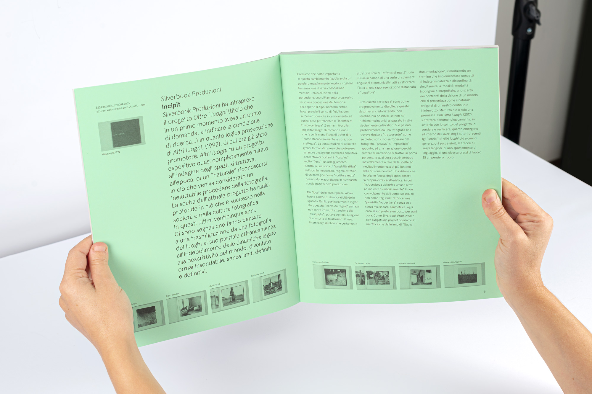
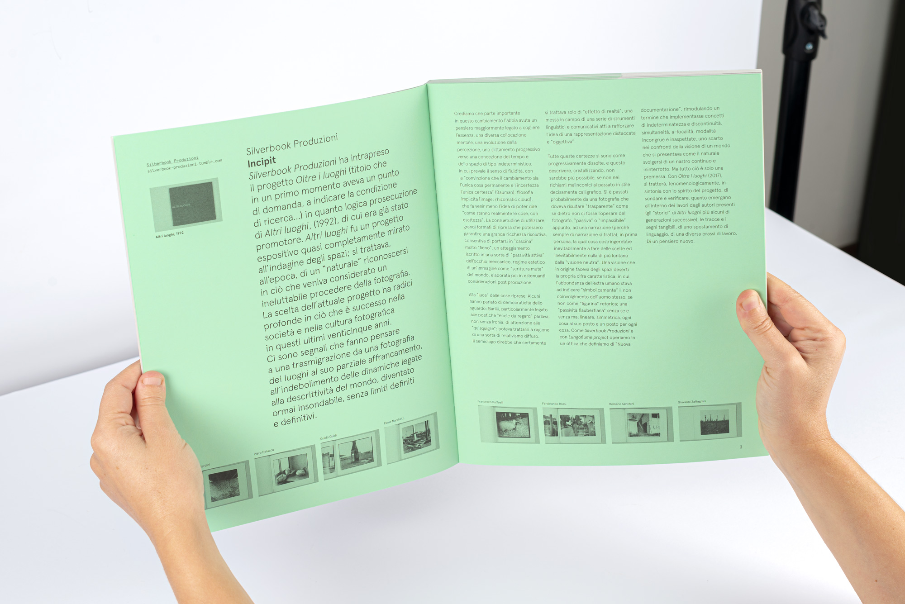
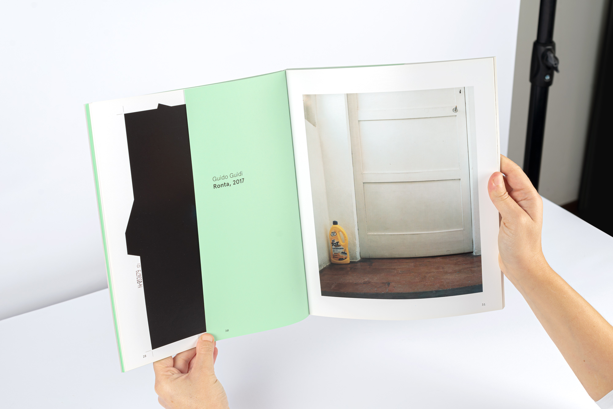
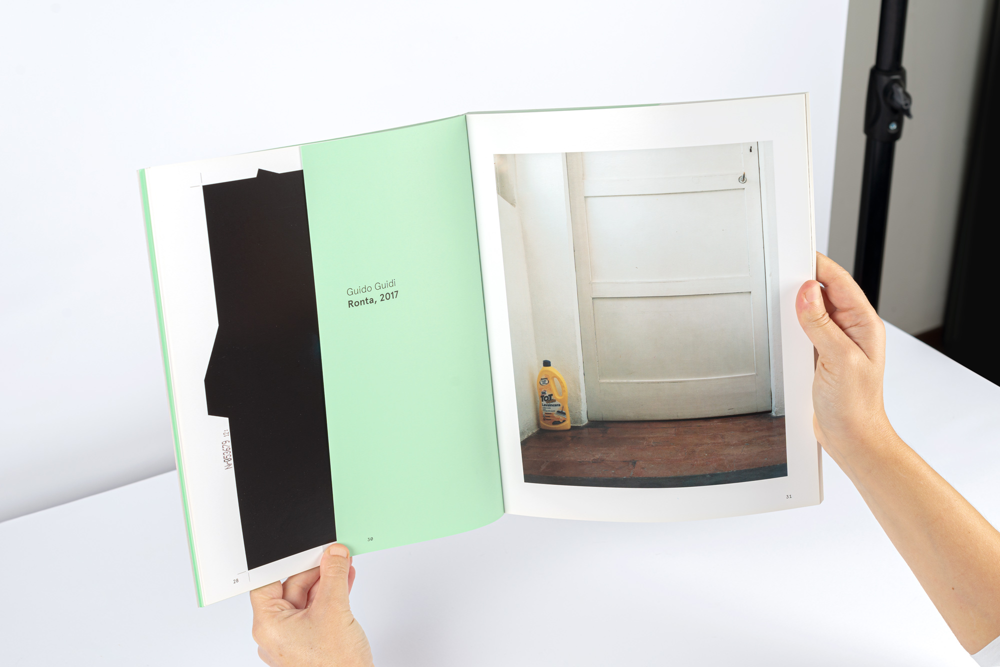

Titolo: Oltre i luoghi - tra descrizione e narrativa
Anno: 2017
Pagine: 150
Formato: 240 x 300 mm
Stampa: Offset
Editore: Editrice Quinlan
Copie: 350
Stampato in italia
Autori: Cesare Ballardini, Michele Buda, Gianni Gori, Guido Guidi, Daniele Lisi,
Piero Delucca, Flavio Marchetti, Giulia Marchi, Luca Nostri, Emanuela Palazzi, Francesco
Raffaelli, Gloria Salvatori, Romano Sanchini, Giovanni Zaffagnini
Testi: Giampaolo Proni, Roberta Valtorta
ISBN: 978-88-99390-25-9
Book design: Ilaria Montanari
Prezzo: esaurito
Questo libro è logica prosecuzione di
Altri luoghi
,
Riccione, 1992, che aveva come cifra caratteristica
l’indagine “neutra” degli spazi, spesso con modalità
vicine a quella che era stata indicata come “nuova
topografia”; un comportamento distaccato con
l’apparente volontà di “descrizione” delle cose “così
come stanno”. Oltre i luoghi, riprendendo gli autori
storici del progetto originale e aggiungendone
altrettanti di generazioni successive, provenienti, in
parte, dalla stessa “scuola”, tenta di fare il punto
attuale su quella poetica, cercando anche di registrare
spostamenti o allontanamenti da quella dimensione di
ricerca linguistica.

 

 
